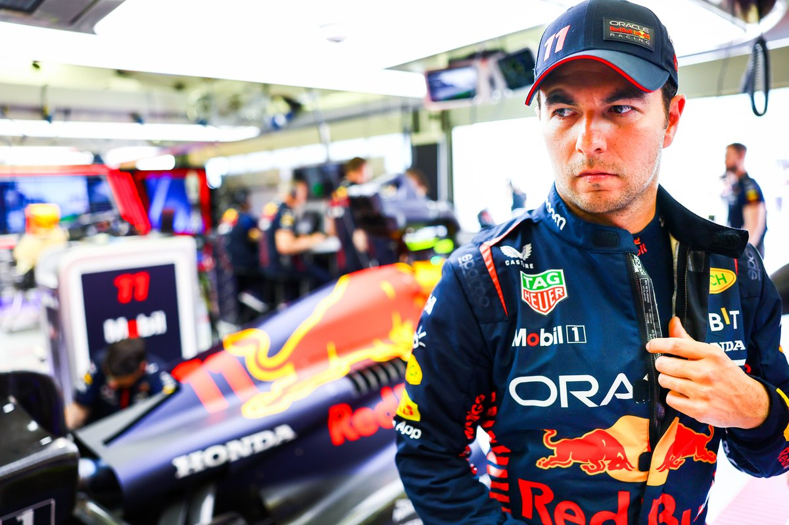
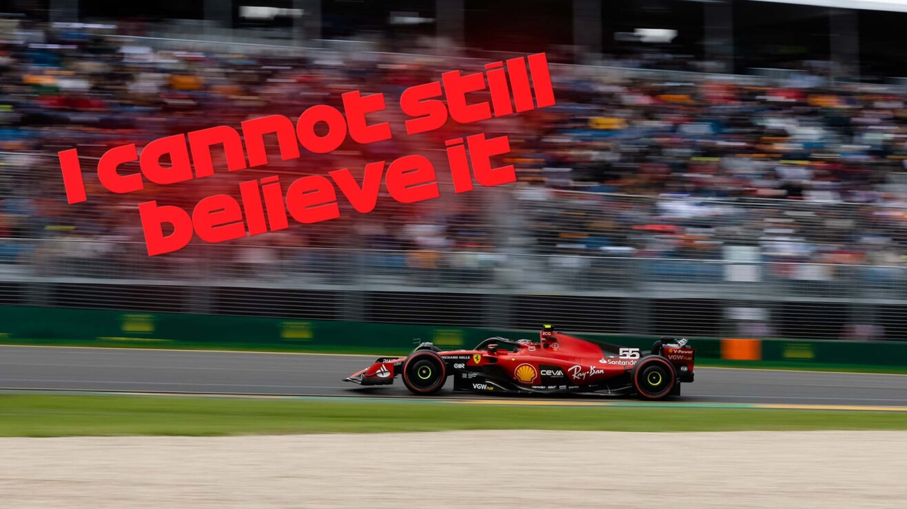
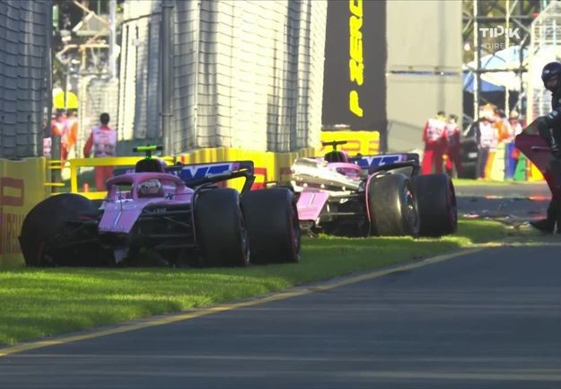
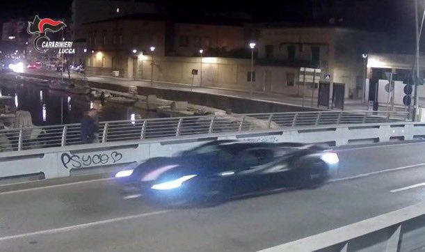
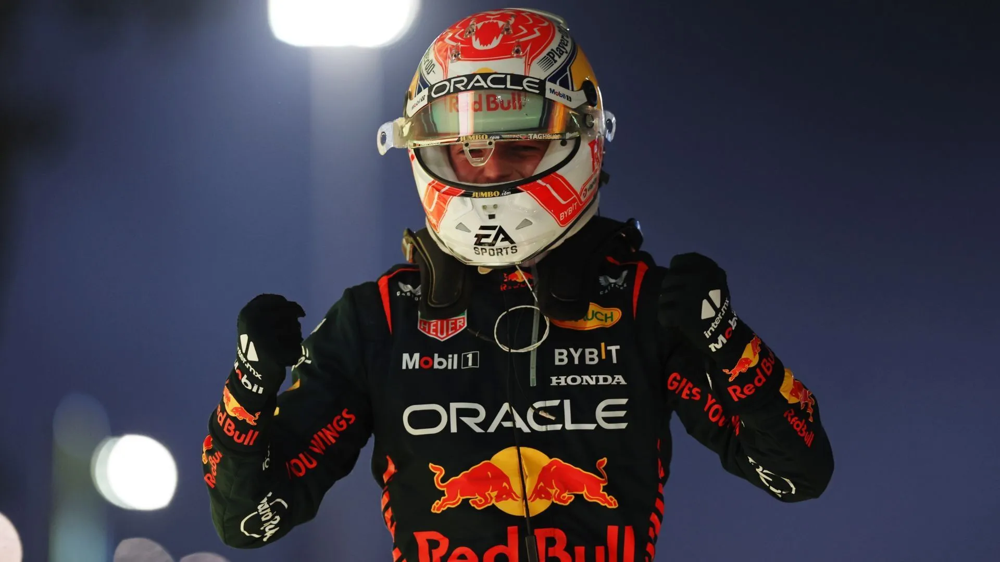

¿Es Sergio Pérez un verdadero contendiente al Campeonato Mundial este
año?

Sergio Pérez se encuentra a solo un punto de ser puntero en la
clasificación de
pilotos, solo lo supera su compañero de equipo en Red Bull, Max Verstappen, luego de haber dominado
en el Circuito de Jeddah Corniche del Gran Premio de Arabia Saudita donde su compañero que quedo en
el segundo lugar a casi 5 segundos de Sergio, que se llevó una aplastante victoria, convirtiéndose
en uno de sus mejores Grades Premios. Pero, ¿es el mexicano, luego de haber corrido en 237 Grandes
Premios, un verdadero aspirante al título sabiendo al compañero que tiene?, y además ¿el equipo lo
dejara competir por este título o se lo dejaran a Max como en la temporada pasada?
Carlos Sainz perjudicado

Luego de la segunda relanzada por bandera roja, Sainz provoco un
accidente contra su compatriota Fernando Alonso, apartir de esto la FIA declaro su penalidad de
5
segundos, por lo cual Carlos paso de estar cuarto a estar décimo tercero
Podio de Campeones

Luego de la Gran Premio de Australia el podio quedo entre 3 campeones
de
la categoría, con Lewis Hamilton con 7 títulos, Fernando Alonso con 2 títulos y Max Verstappen
con
otros 2 títulos, esto hace que en el podio hubiera 11 títulos en total
Tención en Alpine

Los dos ALpine tuvieron un accidente por culpa del Francés Pierre
Gasly que luego de la bandera roja y de la resalida, en la curva 3, Gasly no ve que a su derecha
estaba su compañero de equipo, esto provocó que los dos se vayan contra los muros y se queden
sin carrera así denegando importantes puntos para el mundial de constructores
Charles Leclerc
en persecución con su Ferrari

El Monegasco Charles Leclerc
se llevó una sorpresa hace un año, cuando un aficionado que resultó ser un ladrón que le robó el
reloj, que era un Richard Mille
personalizado, que se estima en más de 300.000 euros esto pasó en Darsena
de Viareggio
, cerca de Livorno, Italia. Luego del año las autoridades revelaron las imágenes, donde se puede
ver a los ladrones subidos a una moto y un poco atrás al Monegasco con su Ferrari 488 Pista
persiguiendo a los ladrones
La Maldición

En la Fórmula 1 hay una maldición que dice que el piloto que gana la
primera carrera de la temporada, no se consagra campeón en el mundial de pilotos, esto empieza
en la temporada del 2017 donde Sebastián Vettel
gana el primer GP
y que en esa temporada el campeón fue Lewis Hamilton. Ahora en esta temporada Max Verstappen fue
el ganador del primer GP
y entonces la pregunta es ¿Podrá el vigente campeón ganar su tercer título y romper la
maldición?